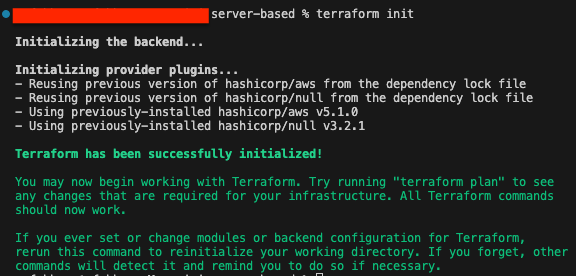

Building a Resume Website on AWS EC2 Using Nginx, Terraform,Kubernetes, and Docker
PengHian Ang
June 7, 2023
My primary objective for this project is to demonstrate my expertise as a DevOps Engineer while expanding my technical skill set. I believe that true learning happens through hands-on experience and problem-solving.
Therefore, I will actively engage in the development process to showcase my knowledge and improve my abilities along the way.
Additionally, I aim for this project to serve as a comprehensive guide for individuals looking to establish their own DevOps infrastructure. By documenting the entire process and sharing my experiences, I hope to provide valuable insights and practical instructions that can assist others in successfully implementing similar systems.
Prerequisites
-
AWS Account:
An AWS account is essential for using Terraform to build projects. It allows Terraform to interact with and manage AWS resources, facilitating infrastructure provisioning and management.
-
Terraform Installed:
Terraform must be installed on your computer to build this project. Terraform is an infrastructure-as-code (IaC) tool that automates and manages cloud resources. Installing Terraform on your PC enables you to define your infrastructure as code and deploy it to AWS.
-
Git Installed:
Git must be installed on your computer to clone the project from my GitHub repository. Git is a version control system that facilitates efficient collaboration and code change tracking.
Deciding the Infrastructure Setup
For this stage of the project (hightlighted in blue), I have chosen the following infrastructure setup. The image below illustrates the setup:
- Terraform: For AWS resource creation.
- CloudFront: To boost user experience with caching services.
- Route 53 and AWS Certificate Manager: For DNS management and SSL certificate configuration for angpenghian.com.
- AWS Application Load Balancer: Load balancing across EC2 instances, currently a single instance for proof of concept.
- AWS Internet Gateway: Provides internet access to VPC resources.
- Kubernetes cluster: Consists of a master and a worker node. NGINX deployment on worker node, leveraging PV and PVC for file reading on EC2 server. Service made public via NodePort.
instructions:
- Open a terminal (Command Prompt on Windows, Terminal on Mac or Linux).
-
Navigate to the empty folder where you want to clone the
repository. You can use the cd (change directory) command to do
this. For example:
cd /path/to/your/folder -
Once you're in the right directory, use the git clone command
followed by the URL of the repository:
git clone https://github.com/angpenghian/resume.git - Press Enter and the repository will be cloned into your chosen folder.
-
After cloning the GitHub repository, use the subsequent command to
navigate to the terraform directory that includes the necessary
Terraform and Bash scripts for configuring the infrastructure.
cd /Your Folder Directory/Terraform/infra/ -
First, create a new directory called 'secrets' using the command
below:
mkdir secrets -
Next, log into your AWS root user account. Use the console's
search bar to find the IAM service.
 Inside the IAM interface, navigate to the Users section and choose
'Add users'.
Follow the on-screen instructions to create your IAM user.
Once the user is created, click on it. In the 'Security
credentials' tab, find 'Create access key'.
Inside the IAM interface, navigate to the Users section and choose
'Add users'.
Follow the on-screen instructions to create your IAM user.
Once the user is created, click on it. In the 'Security
credentials' tab, find 'Create access key'.
 It's crucial to save and document both keys for future reference.
It's crucial to save and document both keys for future reference.
-
Now, create a key pair to enable SSH access into the AWS EC2
machines you'll be making. Use the console's search bar to find
"Key pairs".
 In the Key pairs section, select Create key pair. Take note of the
region you're in because key pairs are region-specific.
After selecting "Create key pair", input your preferred key name.
Upon completion, the key pair will be generated and a .pem file
will be downloaded.
In the Key pairs section, select Create key pair. Take note of the
region you're in because key pairs are region-specific.
After selecting "Create key pair", input your preferred key name.
Upon completion, the key pair will be generated and a .pem file
will be downloaded.

- Afterward, save the access keys and key pairs in the given format within the 'secrets' directory.
-
Now that your security credentials are properly set up, there are
still a few files you need to edit for the Terraform setup.

-
In the provider file, you can modify the access key location if
you've stored it elsewhere.

-
For terraform.tfvars, you can modify parameters such as the EC2
machine image, your instance type, private key path, the domain
you're using, and a validated SSL certificate ARN from AWS Cert
Manager.

-
Once you've finished editing the files, you can initialize the terraform directory.
navigate to the terraform directory (Resume-website > terraform > server-based) that includes the necessary Terraform and Bash scripts for configuring the infrastructure.
Than type the following command:
terraform init -
If you have cloned my repository, you would have the nessary terraform files to build the infrastructure.
navigate to the server-based directory (Resume-website > terraform > server-based) that includes the necessary Terraform and Bash scripts for configuring the infrastructure.
Than type the following command:
terraform apply
-
After running the terraform apply command, it might have a error for remote-exec.
Type terraform apply again.
terraform apply
-
Once the initialization is complete, you can will be able to see a kudeadm join command.
Take note of the kubeadm-join command and the ip addresses.
For the example it would be:
sudo kubeadm join [your-ip]:6443 --token [your-token] --discovery-token-ca-cert-hash [your-hash] -
Now that the infrastructure is built, you would need to SSH into the EC2 instance.
But before that we would need to change the permission of the key.pem file.
Navigate to where you have stored your key.pem file. for me it would be Resume-website > secrets
Type the following command:
chmod 400 [your-key.pem]
-
Now that the infrastructure is built, you can access the server via SSH.
Navigate to where you have stored your key.pem file. for me it would be Resume-website > secrets
Currently we are trying to setup the Nginx kubernetes deployment on node01. so we would need to ssh into it.
Type the following command:
ssh -i [your-key.pem] ec2-user@[your-ip] -
Using the previous kubeadm join command, we will now join the node01 to the kubernetes cluster.
Type the commands saved from the previous step

-
Now that the node01 is joined to the kubernetes cluster, we can check the status of the nodes.
Firstly we need to SSH into the masternode.